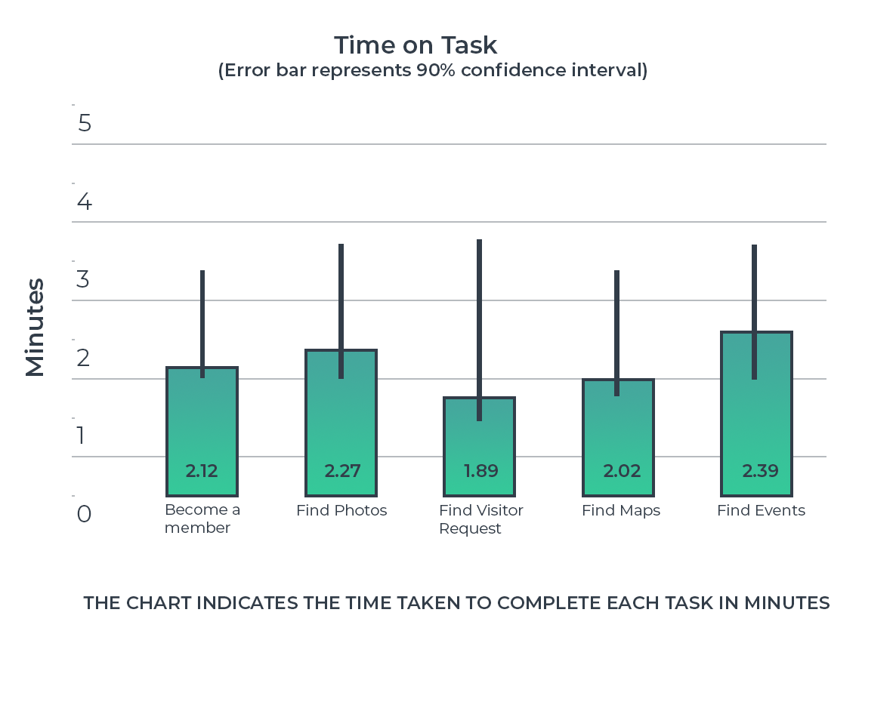

Product Description
Bergen Swamp Preservation Society is an educational institution whose purpose is to conserve the flora and fauna of its Upstate New York properties. The society is chartered with three-fold purpose:
- To conserve the flora and fauna of the land owned by the society.
- To offer school, colleges and accredited group access for the purpose of research and study.
- To publish scientific and cultural information pertaining to the Society’s land.
Salient Features
Previous version of this site used to contain simple HTML code that gave basic information about the rich flora and fauna residing in the swamp, the member and visitor policies.
The revamped version of the site gives in depth information about:
- The swamp and its neighbouring properties
- The research conducted on the preservation site
- Latest events and news
- Their collaborations with other communities
- Links to their social media accounts
- Send visitor requests
- Donate money via PayPal
- View photos of the sites
- Contact if have any request or questions
Heuristic Evaluation
My team and I found upto 15 problem points that made the website internally and externally inconsistent. These are some of the areas I would like to highlight:
Obscure Icons

Each of the icons can be externally mapped to real world entities or depiction of the link, except the ‘research’ link. The research icon is not externally consistent with what may be perceived as research to many users. Generally, the frequently used icons are a microscope, a magnifying glass looking at a sheet, atomic structure of an element, etc. Since most research conducted here is going to be either botanical or zoological, an image that depicts one of these fields could be used as an icon.
Unclickable Icons

Almost all of us agreed that the icons that represent the different nature preserves looked clickable and seemed like it would lead to a page more information about the perserve.This would be considered as an inappropriate selection of design pattern and affects the perceptibility of system state of the user.
Disabled Button
The icon is externally consistent with images that are used for a document, however the dark grey color and the proximity to the text around the icon make it look like a disabled button. This again an inappropriate representation of system state.
Validation of Forms
The visitor request form accepts alphanumeric values for all fields and there is no validation on email field. On click of the submit button, the values are not validated and no error prevention step is taken. User interaction with the system must result in immediate, perceptible, and interpretable feedback.
The defects listed here are in order of high severity to low severity in relation to each other:
- Feedback was missing when Visitor Request form is submitted
- Missing validation on Visitor Request Form for email
- Fields in Visitor Request form accepts all values.
- Off Trail Reason field accepts blank value when ‘Yes’ radio button is selected.
- Missing link to Visitor Request form on Visitor Policy page.
- No documentation provided for advantages or reasons to become Member.
- Dark grey icon used for printable membership application form
- Dark grey color used for visited links.
- Date and Time fields in Visitor Request form are Textboxes
- Off Trail Reason field is always displayed
- Address field labels are placed below the textboxes
- Calendar dates and event detail need to be referred separately
- Previous and Next buttons are not near the intended target on wider screens
- Icons used for “OUR UPSTATE NEW YORK PROPERTIES” seem clickable
- Vague icon used for Research in “Favorites” section.
Research Questions
The study focuses on identifying potential usability issues on the website, collecting participants feedback and suggestions. The results of the study should indicate the general usability issues and suggest improvements.
Our Research Questions were:
- How quickly were the participants able to find information about Bergen Swamp and other locations mentioned in the site?
- Were the participants able to locate and complete the visitor request form?
- How many clicks or how long did it take the participants to find the photo gallery?
- How many clicks or how long did the participants take to locate and complete Membership form?
- What factors do participants consider before they donate to Bergen Swamp?
- What were the questions the participants ask while completing the tasks?
- How closely does the flow of the website match the user’s conceptual model (based on user’s think aloud protocol)?
- Were the participants confident about navigating through the website?
Methodology
Participant Characteristics
The study was initially planned to recruit 10 to 12 participants who were interested in the preserve or the swamp for various reasons.We recruited 2 participants to conduct the pilot test. The first test helped us clarify and reform the task scenarios we created and the second pilot test helped us understand the requirement of counterbalancing our tasks.
For the test, we recruited 5 participants in total. All the participants were Masters students between the age of 18 and 26, studying at the Rochester Institute of Technology with an inclination towards joining or being a member of a nature preserve.
Inclusion Criteria:
- Participants who were willing to join or already a member of a nature preserve.
- Participants who were willing to visit preservation society for recreational or study purposes.
Exclusion Criteria:
- People with less time and interest in outdoor activities
- People who were not interested in joining a nature preserve.
Test Design
The usability test will be conducted in the usability testing lab at B. Thomas Golisano College of Computing and Information Sciences, RIT, Rochester, NY. This test will require the participant to use and evaluate the revamped version of the Bergen Swamp Preservation Society Website. The test sessions will last 45 minutes approximately and each participant will each be given a list of five tasks. They will be asked to answer questionnaires before and after the test regarding the ease of use and feedback about the website. All qualified participants will receive a $20 gift card from Amazon after they have participated in the test.
This study will involve a good mix of participants from different walks of life and age groups with an interest in visiting or volunteering in preservation societies or biological research.The table represents the order in which the tasks are performed by the 20 participants.
Test Personnel Roles
The team was divided into two main roles: Test Moderator and Observer. At any given test session, there were at least 3 members present for the test where one of the team member assumed the role of test moderator and the others as observers.
Observer Role
Group members who carried out the role of an Observer were recording observations based on the decided metrics. They noted points from the think-aloud method the participants used during the tests. One of the observers was in contact with the moderator via intercom.Moderator Role
The moderator was responsible for everything that happened in the testing room, from welcoming the participants, explaining the purpose of the study, carrying out the background questionnaire and conducting the test. The moderator was the sole person interacting with the participant unless a situation demanded the intervention of the observers. The moderator explained the tasks to the participants and asked timely/appropriate questions that would help extract more information from the participants during the test. Conducting the pre-test and post-test questionnaire was also a vital role of the moderator.Data Collection and Evaluation Methods
Since the product to be tested is a website there aren’t many features and characteristics that are new to most of the population. Hence, we were concentrating more on the qualitative data than the quantitative data that indicate the features and nuances of the website that the creators need to concentrate on. The quantitative data was collected to support the qualitative data.
The experiment will take note of three main quantitative attributes:
- The time each participant takes to complete a task
- The number and type of questions they ask before completing a task
- The number and type of hints the moderators give the participant before successfully finishing the test.
The experiment will take note of four main qualitative attributes:
- Any positive comments that the users have while they practice the ‘think aloud’ method.
- Any confusions or misunderstandings about the website while finishing each task
- Any constructive feedback on how to improve any elements or functions of the website
- Any overall commentary on whether the website is able to communicate and serve its purpose.
The experiment will take note of the user’s preference data:
- Ease of use and access
- Appropriate labels and headings to find the necessary information
- Appropriateness of the website’s functions to the user’s mental model.
Findings
Task Outcome
Every task had a specific destination that marked the task to be complete. Each task warrants a confirmation from the participant that they had completed the task, before we marked it a success or failure.
Time Taken

The time on task was calculated form when the participant starts reading the task to when they declare to have completed the task. This includes the time taken to read the scenario, understands the task, the think aloud protocol (time spent on the website, hints and questions asked/suggestions given), till the participant declares that they have completed the task. This graph indicates the mean time on task for each of the five tasks. The confidence interval indicated takes into account the extended time taken due to the think aloud protocol.
No. of Clicks
The number of clicks were calculated to imply how confused the participant was and to observe which icons and pages were clicked on before arriving at the destination. The number of clicks are calculated from the beginning of the task until they declare was complete.
The number of clicks are subject to error since the participants clicked on each of the text boxes or icons as part of the think aloud protocol. These clicks were counted after successfully completing the task but before the participants declared it as complete. While calculating the average clicks per task, the outlying data has been excluded to provide a more accurate interpretation of the results. This graph shows the number of clicks and the error bar shows 90% confidence interval.
Highlight Reel